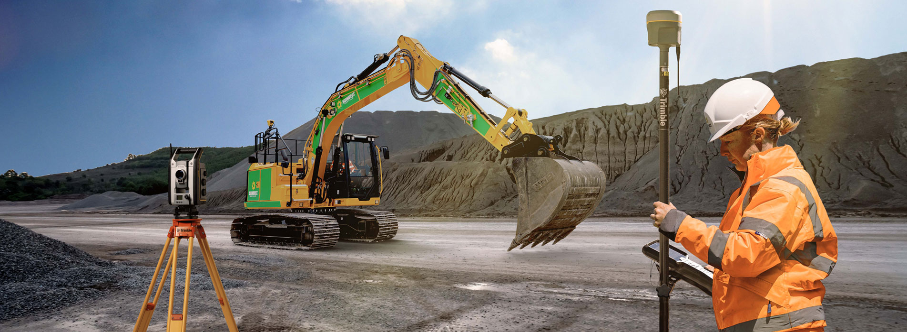
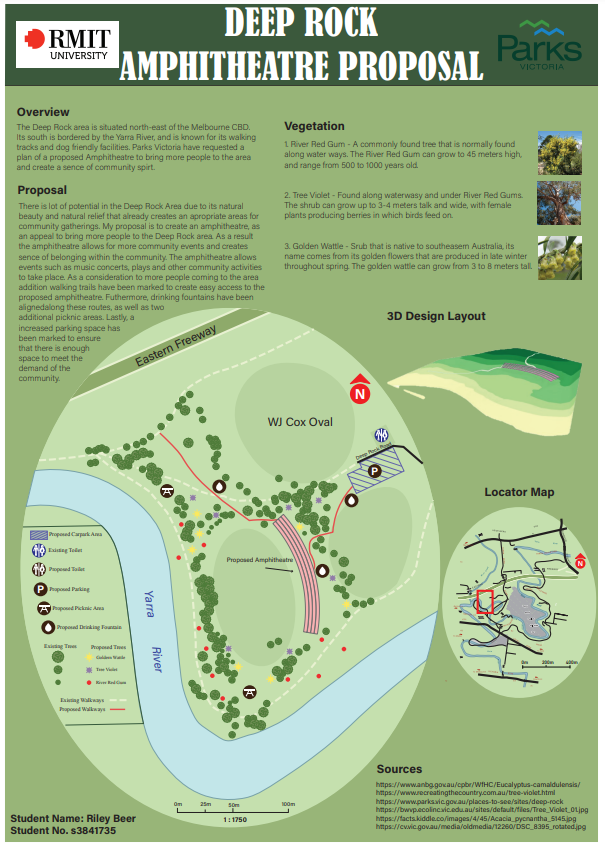

Geoportfolio
Riley Beer
About Me
This website is the geoportfolio of Riley Beer which was made for the subject Professional Practice (GEOM2116). This website entails
information that is academically and profesionally related to the field of geospatial science
I grew up in Torquay, Australia and as of September 2023, I am in my fourth and final year of the
Bachelor of Science (Surveying) (Honours) Degree. I have interests in working within the surveying industry across a range of disaplines such as cadastral,
mining and remote sensing areas. My current Capstone Projects involve using SfM data collected from UAV to monitor coastal cliff movements along the
Surf Coast. I look forward to completing this project at the end of this semester and completing similar research projects out in the workforce.
My own personal hobbies are motorbike riding, running and playing golf.
Academic Portfolio Overview
Cartography
Throughout my degree, I completed two Cartography units. The class assesments consisted of creating maps using various spatial data collected out in the field
or sourced from opensource datasets from resources such as the Australian Bureau of Statistics (ABS). Throught the cartography courses I enjoyed the design
and creativity aspect, and found I really enjoyed making maps. It something that as a surveyor you don't nessesarily get to experiment with plan/map design
so I found it very enjoyable and rewarding.
Below are some of the maps that I have created for assesments across my degree:
Note: If map display is too small, right-click the image and 'Open in new tab' to allow zooming of the map.
Melbourne City Loop: POI's Across Melbourne

Applied Geospatial Techniques (AGT)
Applied Geospatial Techniques (AGT) combined core geospacial science disaplines and combined it into one unit. The unit is very practical and
interesting as it goes through the whole process of a project, collecting the data, reducing the data, presenting the data, as seen below with the different images.
The subject covers areas from three different disciplines:
- Surveying
- Geographical Information Systems (GIS)
- Cartography
The assignment was about the proposal of creating an amphitheatre at Deep Rock Oval located at Yarra Bend Park.
The main deliverables of the subject consisted of producing:
- Topographic survey map of Deep Rock Oval
- 3D generated scene of the proposed amphitheatre
- Amphitheatre and Pathway plan of the proposed site
- Final map of the amphitheatre proposal
The topographic survey map was created using surveying data obtained on the field using a total station at Deep Rock Oval, Yarra Bend Park.
Unfortunately, we weren't able to collect our data due to the Covid Pandemic so our raw data was provided to us. The topographic map was created using LISCAD.SEE and LISCAD.CAD.
The 3D generated scene was created using the ArcGIS suite program ArcScene while the raw data was
modified in ArcMap. The proposed pathway was created using ArcMap by using the GIS program to generate the pathway based on slope angle and the amphitheatre
based on z-values. The final map used Adobe Illustrator to create the map along with ArcMap for exporting the 2D amphitheathre image and ArcScene for
exporting the image of the 3D scene.
Note: If map display is too small, right-click the image and 'Open in new tab' to allow zooming of the map.
Topographic survey map (Surveying component)
3D Amphitheatre and pathway plan (GIS component)

Final map of proposal(Cartography component)

Capstone Project
I am currently completing a Capstone Project, which is required in your final year at RMIT, surrounding how structure from motion (SfM) techniques
can be used to montior cliff erosion and acreation along the Surf Coast. I have found it really challenging learning new concepts and using
new programs such as CloudCompare, Pix4D and DroneDeploy. The project has allowed me to delve deep into the drone space as it is something that
I find interesting and hope to persue later in my professional career. Below I have attached my Capstone Poster which introduces the main ideas
that the project aims to do.
Note: If map display is too small, right-click the image and 'Open in new tab' to allow zooming of the map.
Capstone Project: Drone Imagery: How Can SfM be Used to Monitior Cliff Faces
Industry Experience
This page will briefly cover all my work experience (as of September 2023) within the Surveying industry. I have worked at two companies Willis Setouts and
Surveys and am now currently working at Hamilton Land Surveyors. This page will outline the experience I have gained and skills I have learned during my time
at both companies with a brief overview of my role in each job.
Willis Setouts & Surveys
Student Surveyor
Jan 2022 - Dec 2022
During my third year of my studies of Bachelor of Applied Science I worked at Willis Setouts and
Surveys as a student surveyor. I worked part time over the course of the year and gained experience
in the construction surveying industry. I worked as part of a team that conducted slab set-outs for
volume builders such as Metricon, Simmonds, Homebuyers Group and Boutique. During my time at
Willis Setouts and Surveys I was exposed to Trimble total stations to complete field work and
programmes such as lisCAD and AutoCAD.
I learnt a lot about reading builders floor plans and POS during my time at Willis. At the start I found
the plans confronting and overwhelming as there’s a lot of information to sift through. I found I
became more and more comfortable with interpreting plans and dissevering what I needed to
complete the lisCAD plans correctly. I further improved my skills with lisCAD drafting and drew on
skills I had learnt during my studies and developed new ones in areas that allowed me to complete
tasks quickly. Such as using functions such as ‘Bearing and Distance’ commands when creating points
at 90° of each other as well as other tips that I will carry throughout my professional career.
I worked for Willis for a year and found that during my time there I progressed quickly and learnt the
process of creating a LisCAD plans, uploading jobs to the Total Station, completing set outs a at a
rofessional standard and coming back to the office and uploading the completed job into the system.
Hamilton Land Surveyors
Survey Technician
August 2023 - Present (as of September 2023)
My title at Hamilton Land Surveyors is a Survey Technician which entails assisting the party leader during field days and create related plans within the office. The job allows exposure to
the cadastal side of surveying and gives me a different insight into the Surveying Industry to my previous employment. I have been really enjoying this disapline
of surveying and have devoloped my skills in areas such as re-establishment surveys, feature and level surveys and experience in processes such as subdivisons
and various other applications.
I have enjoyed the field work that I have completed and have learnt alot of skills that I will carry into my professional career. I have gained alot of confidence
and take alot of pride in my work. I look forward to taking on every oppertunity that presents itself and to continue to grow my knowledge across all fields of
the surveying industry.
Skills and Proficiencies
|
Surveying Fundamentals |
 |
LisCAD |
|
Cartographic Principles |
 |
Adobe Illustrator |
 |
Remote Sensing |
 |
Photogrammetry and Drone Mapping |
Credits and Attributions
The following programming languages and software were used to create the website
- HTML
- CSS
- JavaScript
- Visual Studio Basic
The deliverables contains content from the following subjects:2
- Cartography 2 (GEOM2079)
- Applied Geospatial Techniques (GEOM2083)
Special thanks to the following people who have helped me make this website with their expertise and guidance:
As per the policy of using the Flaticons with a free account, the attributions and crediting of the creators of the icons are as below:
Attributions of icons used: